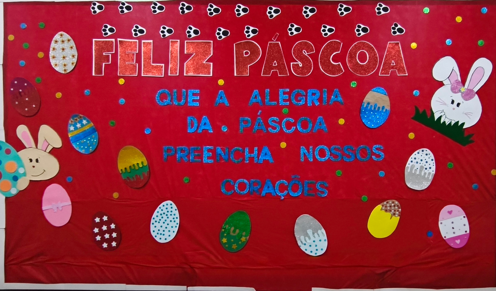

Anotação do colégio
A celebração da Páscoa, como representada na imagem, transmite um clima de alegria, renovação e união. O destaque para a frase “Feliz Páscoa”, em letras grandes e coloridas, evidencia o caráter festivo da data, que é marcada pela troca de mensagens positivas e pela valorização de momentos em comunidade.
Os elementos decorativos, como os ovos coloridos, remetem ao símbolo da vida nova e do recomeço, muito associado à Páscoa. Essa simbologia reforça a ideia de esperança, transformação e renovação, valores que vão além do aspecto religioso e alcançam o convívio social e escolar.
Além disso, o ambiente decorado demonstra cuidado e dedicação, indicando que a celebração foi preparada com carinho para acolher todos. Em um contexto escolar, isso também fortalece o sentimento de pertencimento, promovendo a integração entre os alunos e incentivando atitudes de respeito, partilha e solidariedade.
Assim, a imagem não representa apenas uma comemoração, mas também um momento significativo de reflexão e convivência, no qual se celebram valores importantes como o amor ao próximo, a união e a construção de um ambiente mais harmonioso.
A celebração da Páscoa, como representada na imagem, transmite um clima de alegria, renovação e união. O destaque para a frase “Feliz Páscoa”, em letras grandes e coloridas, evidencia o caráter festivo da data, que é marcada pela troca de mensagens positivas e pela valorização de momentos em comunidade.
Os elementos decorativos, como os ovos coloridos, remetem ao símbolo da vida nova e do recomeço, muito associado à Páscoa. Essa simbologia reforça a ideia de esperança, transformação e renovação, valores que vão além do aspecto religioso e alcançam o convívio social e escolar.
Além disso, o ambiente decorado demonstra cuidado e dedicação, indicando que a celebração foi preparada com carinho para acolher todos. Em um contexto escolar, isso também fortalece o sentimento de pertencimento, promovendo a integração entre os alunos e incentivando atitudes de respeito, partilha e solidariedade.
Assim, a imagem não representa apenas uma comemoração, mas também um momento significativo de reflexão e convivência, no qual se celebram valores importantes como o amor ao próximo, a união e a construção de um ambiente mais harmonioso.